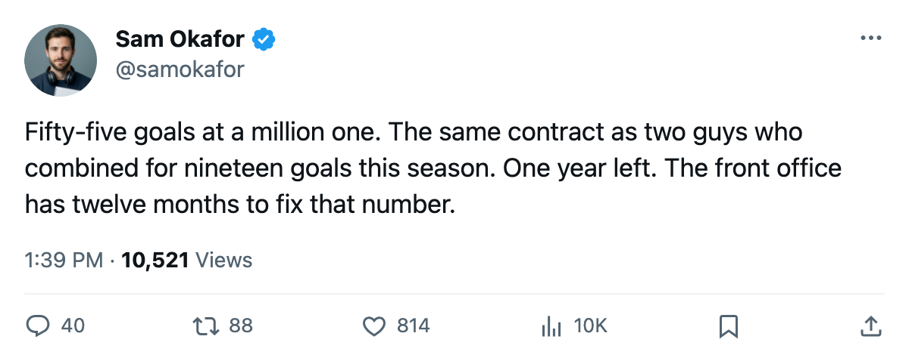

TOR
TORThe $1.10M winger: 55 goals, 99 points, 1 year left
Marian Gaborik's contract reads the same as three fourth-liners, and his playoff numbers look like the regular season compressed
 Sam OkaforLeafs beat reporter · Queen City Telegram
Sam OkaforLeafs beat reporter · Queen City Telegram
The piece
 Marian Gaborik98 finished the regular season with 55 goals and 99 points in 82 games at 23 years old. His overall sits at 96, the highest on this roster by 7 points. He plays 20.5 minutes a night, centers the power play unit, and costs $1.10M with 1 year remaining on the deal.
Marian Gaborik98 finished the regular season with 55 goals and 99 points in 82 games at 23 years old. His overall sits at 96, the highest on this roster by 7 points. He plays 20.5 minutes a night, centers the power play unit, and costs $1.10M with 1 year remaining on the deal.
Through 2 playoff games, he carries 2 goals and 2 assists. Same pace on a compressed sample.
The salary table on this roster reads like this: Sundin at $8.40M with 5 years left, Mogilny at $5.50M with 2 years left, Belfour at $6.50M with 1 year left, Afinogenov at $4.50M with 4 years left. Gaborik, who scored 55 goals, costs $1.10M with 1 year left. That is the cheapest elite player on a roster that carries four men above $4.50M.
The Bureau's Development Index lists Gaborik as its top riser on this club at +6, his overall at 96 against a base of 91. He sits 1st among Toronto's listed players on the Index and 1st among all listed risers in the league by overall grade.
What the extension means
One year left at $1.10M for a 23-year-old with 99 points means the front office faces a negotiation in a year. His comparables on this roster:  Brad Richards87, 66 points at $1.00M with 1 year left.
Brad Richards87, 66 points at $1.00M with 1 year left.  Gary Roberts88, 81 points at $2.70M with 1 year left, age 38. The 23-year-old with the most goals and most points scores at the same rate as Richards at the same money.
Gary Roberts88, 81 points at $2.70M with 1 year left, age 38. The 23-year-old with the most goals and most points scores at the same rate as Richards at the same money.
His cap hit is the same as Scottie Upshall79, who scored 8 goals in 68 games, and  Nikita Alexeev78, who scored 11 in 55. Three men on this roster at $1.10M.
Nikita Alexeev78, who scored 11 in 55. Three men on this roster at $1.10M.
The 1-year deal means the extension conversation happens before 2005-06 free agency closes on 2005-07-28. A player with 55 goals at 23 does not sign another 1-year deal at $1.10M. What comes next depends on what this spring produces. A deep run moves the number. A first-round exit does not change the talent, only the leverage.
